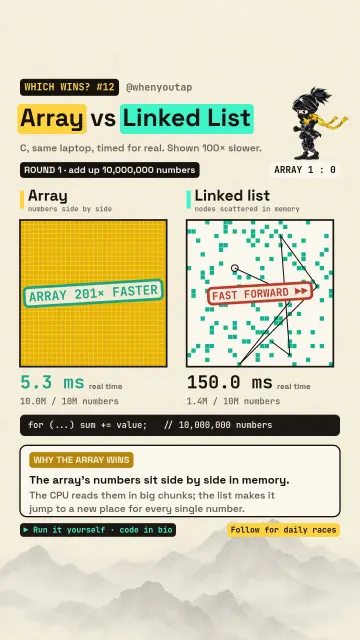

Array vs Linked List
- Read everythingArray · 201×
- Insert at frontLinked list
Details
Round 1. Add up 10,000,000 values: Array 5.3 ms, shuffled linked list 1,060 ms
Round 2. Insert 2,000 values at the front of 200,000: Linked list 0.002 ms, array 42 ms
Arrays win at reading in order (the CPU fetches neighbours together); linked lists win at inserting at the front.
Interview: Why is a linked list slow to walk even though each step is O(1)? Its nodes are scattered in memory, so almost every step is a cache miss; an array's values sit next to each other.
Timed on one laptop: your times will differ, the winner should not.